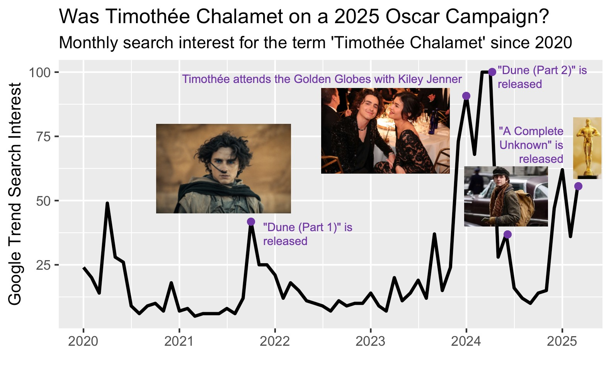

Created by: Joanna Schroeder and Elise Longenecker
In March of 2025 the Academy updated their voting guidelines for the Annual Academy Awards. Now, voters must have watched each film nominated in a category in order to be eligible to vote for the winner. 1 If you’re wondering how that wasn’t a rule already, you’re not alone! 2
Ever year the legitimacy of the Oscars are questioned, yet they remain one of the most important awards in the film industry. 3 In this project, we aim to answer two questions about Hollywood’s most prestigious awards.
Other projects attempt to predict Oscar winners using big datasets, including information on accolades garnered throughout a given award season. 4 However, to our knowledge there hasn’t been an attempt to predict nominations using Oscar buzz in over 10 years. 5
 If you were on the internet in January of 2025, you may have heard speculations that Timothée Chalamet was on an Oscar Campaign. Folks online speculated that Timothée was generating buzz for his performance as Bob Dylan A Complete Unknown with the goal of getting the nod and taking home that golden statue. 6 For Acting categories, actors are nominated based on the accumulation of votes from members of the Academy’s Acting branch. 7 So, it stands to reason that being in the zietgiest would be of interest to award season hopefuls.
Film aggregation websites like Internet Movie Database (IMBD) and The Movie Database (TMDB) often include user generated popularity scores for films and actors derived from votes. Q Scores have been used for decades in fields like marketing to understand the consumer appeal of entities including actors. The drawback of popularity metrics like these is that they may not capture longitudinal change over time at all or at a scale fine-grained enough to be robust predictors of nomination. We propose using Google Trends Search Interest in as given year as a proxy for Oscar buzz. In addition to the Google Trends, we gather a dataset of popular actors and films and several covariates, as well as historic Academy Award nominees.
We started by downloading a a dataset of Academy Award winners from Kaggle. Then we subset to Acting awards (Best Lead Actor, Best Lead Actress, Best Supporting Actor, Best Supporting Actress) and data for which Google Trends are available (2004 - present).
Next, we used the TMDB API to extract the top five billed cast members for the 25 most commercially successful movies for each year from 2004-present. Commercial successful was defined by revenue generated.
From these two sources, we netted a list of 668 actors. We then downloaded the monthly Google Trend Search Interest for each actor since 2004. The process of doing this via API was throttled, so this information was downloaded manually. Google Trend Search Interest ranges from 0-100, and is relative to the peak popularity of the given the actor themselves. In other words, Google Trends cannot be used to make absolute comparisons for actors in our dataset, but we can compare the shape and features of the trends as time series.
“Awards rules and campaign promotional regulations approved for 98th Oscars.” Academy Press Office. Accessed: May 4, 2025. [Online.] Available: https://press.oscars.org/news/awards-rules-and-campaign-promotional-regulations-approved-98th-oscarsr↩︎
Taylor, Derrick Bryson. “A New Requirement for Oscar Voters: They Must Actually Watch the Films.” The New York Times. Accessed: May 4, 2025. [Online.] Available: https://www.nytimes.com/2025/04/24/movies/oscars-voting-rules.html↩︎
Barber, Nicholas. “Oscars 2025: Why people claim Kieran Culkin, Zoe Saldaña and Ariana Grande’s nominations are ‘category fraud.’” BBC. Accessed: May 4, 2025. [Online.] Available: https://www.bbc.com/culture/article/20250214-oscars-2025-why-people-claim-kieran-culkin-zoe-saldaa-and-ariana-grandes-nominations-are-category-fraud ; Earl, William. “Oscars Snubs and Surprises: Mikey Madison Scores, ‘I’m Still Here’ Shocks and Diane Warren Has 16th Straight Loss.” Variety. Accessed: May 4, 2025. [Online.] Available: https://variety.com/2025/awards/news/2025-oscars-snubs-surprises-1236319091/↩︎
atakancetinsoy. “Predicting the 2025 Oscar Winners with Machine Learning.” bigML. Accessed: May 4, 2025. [Online.] Available: https://blog.bigml.com/2025/02/28/predicting-the-2025-oscar-winners-with-machine-learning/ ; Movies (Oscars 2001-2025). bigML. Accessed: May 4, 2025. [Online.] Available: https://bigml.com/user/academy_awards/gallery/dataset/67bc509a54e70fb808f13df3 [5] McGee, Matt. “Google Asks: Can Search Trends Predict The Oscars?” Search Engine Land. Accessed: May 4, 2025. [Online.] Available: https://searchengineland.com/google-asks-can-search-trends-predict-the-oscars-64912↩︎
Hyden, Steven. “Timothée Chalamet Should Win an Oscar for His Oscar Campaign.” The New York Times. Accessed: May 4, 2025. [Online.] Available: https://www.nytimes.com/2025/02/26/magazine/timothee-chalamet-oscar-campaign.html↩︎
Hyden, Steven. “Timothée Chalamet Should Win an Oscar for His Oscar Campaign.” The New York Times. Accessed: May 4, 2025. [Online.] Available: https://www.nytimes.com/2025/02/26/magazine/timothee-chalamet-oscar-campaign.html↩︎
“98TH ACADEMY AWARDS® OF MERIT.” oscars.com. Accessed May 4, 2025. [Online.] Available: https://www.oscars.org/sites/oscars/files/2025-04/98th_aa_complete_rules.pdf?VersionId=KHfTeEBPx9GJx9jvW_Ki.1YJgUzDheAU↩︎